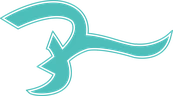

Custom Impeller / Fan Rotor
Fabricated and welded in the workshop. Impellers, fan rotors, and ID fans are balanced here.

Rockfort Metal CoatingRotor, impeller, shaft, turbine, and ID fan balancing at our Klang workshop, up to 4,000 RPM.
Rockfort Metal Coating Sdn Bhd balances rotating components at its workshop in Sungai Rasau Industrial Park, Klang, Selangor. Dynamic balancing here covers rotors, impellers, mechanical turbines, motor and pump shafts, and ID fans, at up to 4,000 RPM.
Balancing corrects the running of a rotating part so it can operate more smoothly. The workshop describes the result as smoother operation, higher performance, and a longer service life. Plants looking for dynamic balancing in Klang, or rotor balancing in Selangor, can bring that work to this local shop, together with the repair and fabrication the same team already does.
These are the rotating components named for dynamic balancing:
An impeller or fan rotor is a typical piece, and the workshop fabricates these parts as well as balancing them. The rotor in the photo below was fabricated and welded in-house. Motor shafts and pump shafts are the other regular items. When a shaft journal is worn, it can be rebuilt first by metal spray and precision grinding, then returned to service from the same workshop.
Fabricated and welded in the workshop. Impellers, fan rotors, and ID fans are balanced here.
Impellers are balanced at this workshop. Worn impellers can also be given a protective coating here.
Balancing sits with the rest of the mechanical work we do for general engineering vendors and manufacturers, power plants, shipyard and marine workshops, the food industry, oil and gas, and water and waste management. ID fans, turbines, pump shafts, and motor shafts are among the parts we balance for this work. The company was founded in 2003 in Klang. A short company introduction is on the about page.
Our vision is improving quality, increasing service life, and saving cost through reliable engineering solutions. A balanced rotor, impeller, shaft, turbine, or ID fan is intended to run more smoothly and to stay in service longer. Balancing the existing component is a cost-effective alternative to full replacement when the part can be kept.
If the part is worn, or a piece has to be made, the same shop can repair it. Shaft journals can be rebuilt by metal spray and precision grinding, impellers can be coated, and pump housings can be restored by weld build-up and machining. We also fabricate shafts, rotating components, and ID fans from drawings or samples. Our mission is to be our customers’ one-stop solution centre and to get the job done.
Rotor balancing for a Selangor plant can stay in Klang. The workshop is off Connaught Bridge, in Sungai Rasau Industrial Park, so balancing, machining, coating, and fabrication happen at one local address. About 20 people work here, and we provide after-hours and shutdown support when a stoppage cannot wait for a normal working day. Journal rebuilding and impeller coating are handled here too. Photos of recent repairs are in the gallery.
Rockfort Metal Coating Sdn Bhd
No.11, Kawasan Perindustrian Sungai Rasau, Jalan 39/16, Off Connaught Bridge, 41300 Klang, Selangor, Malaysia
Phone: 016-205 3556 (Kana)
WhatsApp: 016-205 3556 (Kana)
Email: connect@rockfortindustries.com
Dynamic balancing is precision balancing of a rotating component. We balance parts at up to 4,000 RPM for smoother operation, higher performance, and a longer service life.
Rotors, impellers, mechanical turbines, motor and pump shafts, and ID fans.
The same workshop does thermal spray, machining, protective coating, and fabrication. We balance rotors, impellers, shafts, turbines, and ID fans, and we fabricate those kinds of parts from drawings or samples.
Balancing is carried out at our workshop in Sungai Rasau Industrial Park, Klang, Selangor, at up to 4,000 RPM.
Balancing the existing rotor, impeller, shaft, turbine, or ID fan is a cost-effective alternative to full replacement when the component can stay in service. The aim is better running quality and a longer service life.
Call or WhatsApp Kana on 016-205 3556, or email connect@rockfortindustries.com. The workshop is at No.11, Jalan 39/16, Off Connaught Bridge, 41300 Klang, Selangor.
Call Kana, send a WhatsApp message, or email the workshop to discuss rotor balancing, impellers, shafts, turbines, and ID fans.